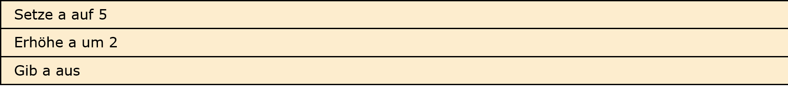
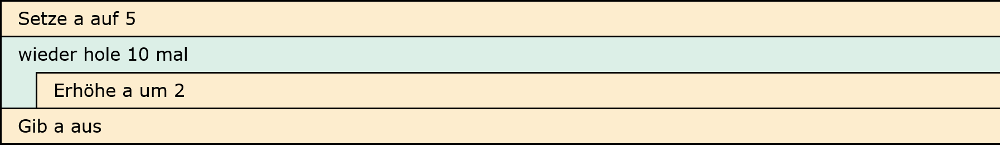
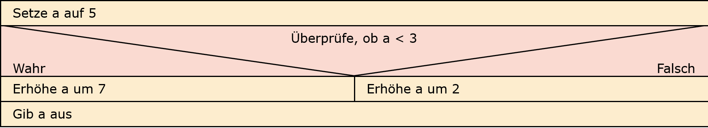
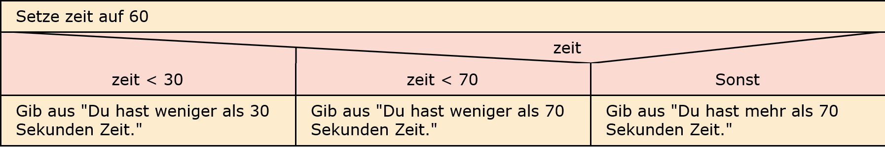
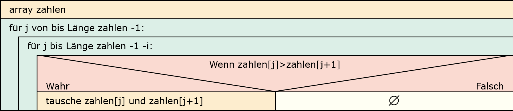
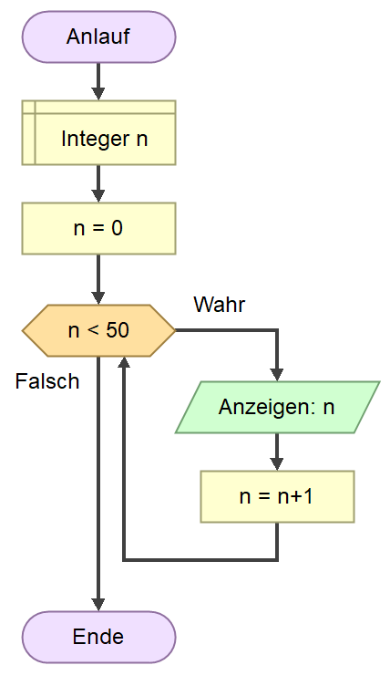

Bevor ein größeres Programm entsteht, wird der Ablauf meist geplant – so wie ein Architekt erst einen Bauplan zeichnet. Für Algorithmen gibt es dafür zwei genormte grafische Darstellungen.
Struktogramm
Struktogramme sind grafische Darstellungen, die in der Softwareentwicklung verwendet werden, um den logischen Ablauf von Algorithmen und Programmen zu visualisieren. Sie bieten eine klare und übersichtliche Möglichkeit, den Programmablauf zu planen, zu dokumentieren und zu kommunizieren. Struktogramme helfen Entwicklerinnen und Entwicklern, den logischen Aufbau eines Algorithmus zu verstehen, bevor sie den eigentlichen Programmcode schreiben. Sie bestehen aus rechteckigen Symbolen, die ineinander geschachtelt werden.
Elemente in Struktogrammen:
Abb. 1: Anweisung im Struktogramm

Abb. 2: Sequenz im Struktogramm

Abb. 3: Zählschleife im Struktogramm

Abb. 4: Verzweigung im Struktogramm

Abb. 5: Fallunterscheidung im Struktogramm
Beispiel 1 einfach
Ausgangssituation: Ein Struktogramm für „Lies eine Zahl ein; wenn sie gerade ist, gib ‚gerade‘ aus, sonst ‚ungerade‘“ besteht aus einer Anweisung (Eingabe) und darunter einer Verzweigung mit der Bedingung „zahl mod 2 = 0?“ und den beiden Ausgaben in den Ja- und Nein-Feldern.
Eingabe: zahl
zahl mod 2 = 0 ?
ja
nein
Ausgabe: „gerade“
Ausgabe: „ungerade“
(Vereinfachte Darstellung als Tabelle. Im echten Struktogramm steht die Bedingung in einem Dreieck, siehe Abb. 4.)
Blöcke von oben nach unten lesen: Zuerst eine Anweisung, dann eine Verzweigung. Warum: Im Struktogramm bedeutet „untereinander“ immer Sequenz.
Jeden Block übersetzen: Die Eingabe wird zu int(input(…)), die Verzweigung zu if/else, die Bedingung „zahl mod 2 = 0“ zu zahl % 2 == 0.
zahl = int(input("Zahl: "))
if zahl % 2 == 0:
print("gerade")
else:
print("ungerade")
Prüfen: Jeder Zweig der Verzweigung wird von mindestens einem Testfall durchlaufen.
Ergebnis: Struktogramm und Programm haben denselben Aufbau. Jeder Block entspricht genau einer Kontrollstruktur.
Eingabe
erwartete Ausgabe
Bemerkung
4
gerade
Ja-Zweig
7
ungerade
Nein-Zweig
0
gerade
Randfall
-3
ungerade
negative Zahl: in Python ist −3 % 2 = 1
2.5
ValueError
falscher Typ für int()
Beispiel 2 komplex
Ausgangssituation: Bubblesort mit zwei geschachtelten Zählschleifen und einer Verzweigung

Abb. 6: Struktogramm Bubblesort
Von außen nach innen lesen: äußere Zählschleife → innere Zählschleife → Verzweigung → Tausch. Warum: Die Einrückung der Blöcke zeigt die Schachtelung. Was weiter innen steht, wird öfter ausgeführt.
Ungenauigkeiten erkennen: In Abb. 6 heißt die Zählvariable der äußeren Schleife versehentlich j; gemeint ist i. Die Startwerte fehlen: Beide Schleifen beginnen bei 0. Die Obergrenzen sind wie bei range ausschließlich gemeint. Warum wichtig: Ein Struktogramm ist nur so eindeutig wie seine Beschriftung. Unklare Grenzen führen beim Programmieren zu Fehlern um eins.
Übersetzen:
def bubblesort(zahlen):
for i in range(len(zahlen) - 1): # äußere Zählschleife
for j in range(len(zahlen) - 1 - i): # innere Zählschleife
if zahlen[j] > zahlen[j + 1]: # Verzweigung
temp = zahlen[j] # Ja-Zweig
zahlen[j] = zahlen[j + 1]
zahlen[j + 1] = temp
# Nein-Zweig ist leer (Symbol ∅)
return zahlen
Erweitern um den Abbruch: Bubblesort mit Abbruch wiederholt Durchläufe, bis kein Tausch mehr stattfindet. Das ist eine fußgesteuerte Schleife: Die Bedingung wird erst nach dem Rumpf geprüft, der Rumpf läuft mindestens einmal. Im Struktogramm steht die Bedingung deshalb im unteren Balken:
Ein Programmablaufplan, auch Flussdiagramm genannt, ist eine grafische Darstellung eines Algorithmus oder eines Prozesses. Er wird verwendet, um den Ablauf von Anweisungen in einem Programm anschaulich darzustellen. Ein Flussdiagramm besteht aus verschiedenen Symbolen, die durch Pfeile verbunden sind und den Fluss von Informationen und Entscheidungen darstellen.
Abb. 7: Anweisung im PAPAbb. 8: Sequenz im PAP

Abb. 9: Zählschleife im PAPAbb. 10: Verzweigung im PAPAbb. 11: PAP Bubblesort
strukturierte Darstellung, klare Hierarchie der Blöcke, passt direkt zu if/for/while, viel Platz für Text
allgemein verständlich, sehr flexibel, auch für Abläufe außerhalb der Programmierung (Geschäftsprozesse) weit verbreitet
Nachteile
für Laien weniger verständlich, Änderungen erfordern oft Neuzeichnen, außerhalb der Programmierung kaum gebräuchlich
erlaubt unstrukturierte Sprünge („Spaghetti-Code“), wenig Platz für Text, große Algorithmen werden schnell unübersichtlich
Praxisbezug: Abläufe dokumentieren
Alltag: Anleitungen wie „Was tun bei Feueralarm?“ oder die Fehlersuche-Seite im Handbuch deines Routers sind oft als Flussdiagramm gezeichnet.
Beruf: Business-Analystinnen und -Analysten modellieren Geschäftsprozesse – etwa den Ablauf eines Kreditantrags bei einer Bank – mit BPMN, einer Weiterentwicklung des Flussdiagramms. Softwareentwicklerinnen und -entwickler nutzen solche Diagramme, um mit Fachabteilungen über Abläufe zu sprechen, bevor programmiert wird.
Das Wichtigste
Struktogramm (Nassi-Shneiderman-Diagramm, DIN 66261): stellt einen Algorithmus als ineinander geschachtelte Blöcke dar. Jede Kontrollstruktur (Sequenz, Verzweigung, Schleife) hat ein eigenes Rechteck-Symbol; Sprünge sind nicht möglich. Programmablaufplan (PAP) (Flussdiagramm, DIN 66001): stellt den Ablauf mit Symbolen (Rechteck = Anweisung, Raute = Verzweigung, abgerundetes Rechteck = Start/Ende) dar, die durch Pfeile verbunden sind.
Grundaufgaben
Aufgabe 2.2.6.1: Symbole zuordnen AFB I
Beschreibe, wie eine Verzweigung und eine kopfgesteuerte Schleife im Struktogramm und im PAP dargestellt werden.
Aufgabe 2.2.6.2: Struktogramme für Sortierverfahren AFB II